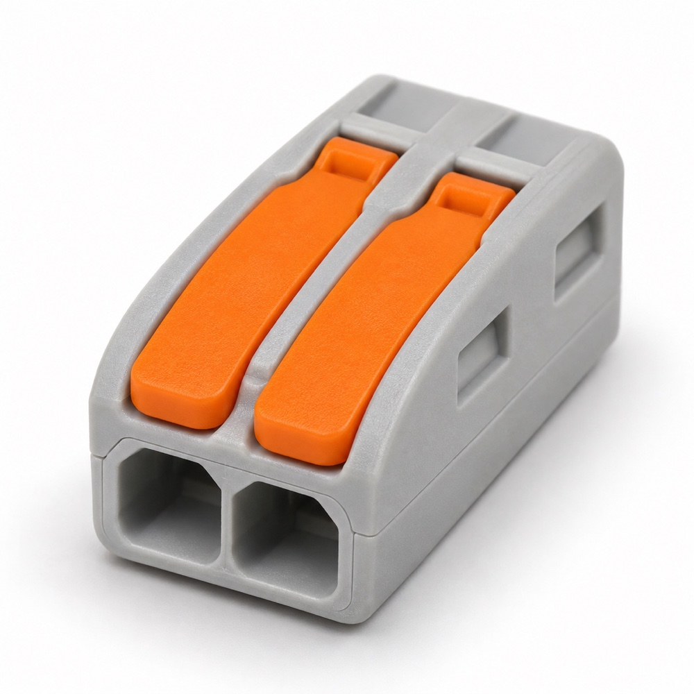

PERNIAGAAN TERHUBUNG YANG PRAKTIKAL
Satukan urusan perniagaan anda.
Teknologi praktikal untuk kedai, pelanggan, pesanan dan pasukan anda, mengikut cara perniagaan anda bekerja.
Seller StudioPratonton konsep
Produk

Penyambung contoh
Produk contoh
Pesanan terkini
PS-0124Pertanyaan baharu
PS-0125Sedia untuk semakan
EMPAT CARA UNTUK MAJU
Alat berguna. Kerja lebih jelas.
Mulakan dengan keperluan utama perniagaan, kemudian hubungkan langkah seterusnya.